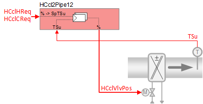
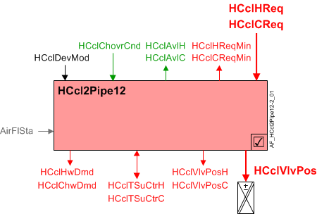
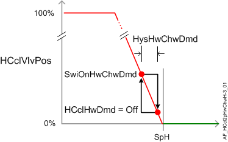
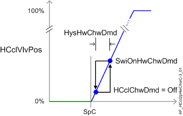

带送风温度控制的加热/冷却盘管 2 管系统 (HCcl2Pipe12)
 | 该应用程序功能操作control valve用于由热水或冷冻水供应的加热/冷却盘管2-pipe changeover系统。 加热和冷却的请求信号（来自房间控制器）是transformed进入送风温度setpoints并提供给自己PID controller(s)用于级联supply air temperature control和更快的响应。 |
Required elements and how to configure them:
元素 | I/O | 信号类型 |
|---|---|---|
HCclVlvPos "Heating/cooling coil valve position" | On-board output, Heating/cooling coil valve position | 2-pipe any signal type |
TSu "Supply air temperature" | On-board input, Supply air temperature | any signal type |
Function
下图显示了与此应用程序函数关联的 BACnet 对象。主要信号流程总结如下：
H/C 线圈加热或冷却请求（HCclHReq / HCclCReq) 被接收并处理为 H/C 线圈阀位置的输出信号 (HCclVlvPos).
基本功能：接受来自相关房间控制器的请求信号并将其映射到适当的控制设定点；将设定值与送风温度传感器的当前值进行比较；在将结果作为命令输出到控制设备的对象之前，将结果传递给设备模式逻辑开关。

| 命令或请求（或相关） |
| 条件或状态或可用性的通知 |
| 设备模式 |
| 互锁（内部信号，不是 BACnet 对象；有关其他信息，请参阅互锁部分） |


Interlocks
房间自动化联锁是协调 HVAC 设备之间交互的内部信号。它们在 ABT 站点或 Web 界面中不可见，但与它们关联的参数可见。有关影响联锁功能的参数的提示，请参阅注释列。
信号 | 类型 | 方向 | 描述 | 评论 |
|---|---|---|---|---|
AirFlCReq | 布尔值 | 出去 | 气流冷却要求 | 有关名为“...AirFlCReq”的参数，请参阅配置部分。 |
AirFlHReq | 布尔值 | 出去 | 气流加热要求 | 有关名为“...AirFlHReq”的参数，请参阅配置部分。 |
AirFlSta | 布尔值 | In | 气流状态 | 范围EnMonAirFlSta必须=是。有关其他信息，请参阅配置部分。 |
Sequence
Hot/Chilled water valve modulation:为了响应加热或冷却需求，该应用功能调节控制阀以将室温控制在设定点。为了响应特殊模式（例如预热、冷却或安全条件）的外部触发，控制阀可以设置为关闭或完全打开。
Cascaded supply air temperature control:从相应的房间温度 PID 接收加热（或冷却）需求信号（HCclHReq、HCclCReq）。然后将其映射到送风温度设定点值（HCclSpTSuH 或 HCclSpTSuC），并用作位于该 AF 中的相应级联送风温度 PID（一种加热，一种冷却）的输入。送风 PID 将设定点值与送风温度传感器的当前值进行比较，任何差异都用于增加或减少到命令对象 (HCclVlvPos) 的模拟输出信号。
如果送风温度传感器无效，则通过室温PID进行温度控制。
Changeover: 这Heating/cooling coil changeover condition多状态对象（HCclChovrCnd）提供从中央工厂收到的有关加热/冷却转换状态的信息。支持三种状态：
- Neither (the plant is switching to / from heating or cooling, and neither is available)
- Heating
- Cooling
Device mode:设备模式的输入信号是多状态值。
HCclDevMod支持以下状态：
- Off
- Control mode (modulation)
- Fully open, heating
- Fully open, cooling
Heating available status:当H/C线圈可加热时，二进制输出信号为“Heating/cooling coil available for heating" (HCclAvlH）将为“是”（可用）。HCclAvlH系统使用它来调节加热资源。例如，如果需要加热，但 H/C 线圈不可用，因为它已经处于最大容量（因为设备模式完全打开），则HCclAvlH将发出“否”信号，并且将激活温度控制序列中的下一个可用加热资源。
要使加热可用状态为“是”，设备模式必须等于“控制模式”（调制）。
还，HCclChovrCnd必须表明中央设备已转为供暖。
Cooling available status:当 H/C 线圈可供冷却时，二进制输出信号为“Heating/cooling coil available for cooling" (HCclAvlC）将为“是”（可用）。HCclAvlC系统使用它来调节冷却资源。例如，如果需要冷却，但 H/C 线圈不可用，因为它已处于最大容量（因为设备模式完全打开），则HCclAvlC将发出“否”信号，并且将激活温度控制序列中的下一个可用冷却资源。
要使冷却可用状态为“是”，设备模式必须等于“控制模式”（调制）。
还，HCclChovrCnd必须表明中央设备已转为冷却。
Supply chain interface outputs
HCclHwDmd支持以下状态：
- Off (no demand signal)
- Heating demand (demand signal is active)
- Warm-up (Hot water demand is initiated when plant operating mode is set to warm-up)
HCclChwDmd支持以下状态：
- Off (no demand signal)
- Cooling demand (demand signal is active)
- Free cooling (cooling device is in free cooling mode)
当有多余的冷却能力时，中央设备可以启动自然冷却。在某些条件下，房间可以在没有明确的制冷需求的情况下利用剩余的制冷能力；室温必须低于与当前室内气候模式（舒适、预舒适等）相关的设定点。这种类型的自然冷却不同于“节能器”自然冷却，后者使用外部空气风门。
Supply chain interface inputs
热水可用性/冷冻水可用性的输入信号是由中央命令确定的二进制值[否|是]。它们通过供应链组通信进行命令，以实现 TOa 相关的设备锁定。每个放弃的默认值为“是”。
HCclHwAvl:如果外部空气温度高于高限值，则 HCclHwAvl 设置为“否”，并且加热阀关闭。 （有关更多信息，请参阅 Central AF SplyHwxx）
HCclChwAvl:如果外部空气温度低于下限值，则 HCclChwAvl 设置为“否”并且冷却阀关闭。 （有关更多信息，请参阅 Central AF SplyChwxx）
如果由于某种原因 HCclHwAvl 和 HCclChwAvl 均为“否”，则设备模式 (HCclDevMod) 将在优先级 9 处设置为关闭。
下图说明了控制调制和相关功能。


Configuration
 Parameters
Parameters
描述 | 范围 | 默认值 |
|---|---|---|
Manual control mode 1:Auto | CtlModMan | 1:Auto |
Supply air temperature setpoints | ||
Maximum supply air temperature setpoint for cooling | SpTSuCMax | 32 [°C] |
Minimum supply air temperature setpoint for cooling | SpTSuCMin | 16 [°C] |
Maximum supply air temperature setpoint for heating | SpTSuHMax | 32 [°C] |
Minimum supply air temperature setpoint for heating | SpTSuHMin | 16 [°C] |
Supply air temperature setpoint heating differential to room setpoint | DiffSpTSuHSpR | 10 [K] |
Interlocks | ||
Switch-on point for air volume flow cooling request | SwiOnAirFlCReq | 4 [%] |
Hysteresis for air volume flow cooling request | HysAirFlCReq | 2 [%] |
Switch-on delay for air volume flow cooling request | DlyOnAirFlCReq | 30 [s] |
Switch-on point for air volume flow heating request | SwiOnAirFlHReq | 4 [%] |
Hysteresis for air volume flow heating request | HysAirFlHReq | 2 [%] |
Switch-on delay for air volume flow heating request | DlyOnAirFlHReq | 30 [s] |
Enable monitoring for air volume flow state 0:No | EnMonAirFlSta | 1:Yes |
Hot/chilled water demand | ||
Switch-on point for hot/chilled water demand | SwiOnHwChwDmd | 4 [%] |
Hysteresis for hot/chilled water demand | HysHwChwDmd | 2 [%] |
Internal settings – do not change | ||
Temperature unit | TUnit | [°C] |
Temperature difference unit | TDiffUnit | [K] |
Interface
界面 | 描述 | 类型 | 参考号 | 拥有者 |
|---|---|---|---|---|
HCclVlvPos | Heating/cooling coil valve position | AO | ◉ | Room segment / Device |
HCclVlvPosC | Heating/cooling coil valve position for cooling | ACalcVal | ● | - |
HCclVlvPosH | Heating/cooling coil valve position for heating | ACalcVal | ● | - |
HCclSpTSuC | Heating/cooling coil supply air temperature setpoint for cooling | APrcVal | ● | - |
HCclSpTSuH | Heating/cooling coil supply air temperature setpoint for heating | APrcVal | ● | - |
PrSpRu | Present setpoint for room operator unit | APrcVal | ● | - |
HCclDevMod | Heating/cooling coil device mode 1:Off | MPrcVal | ● | - |
HCclTSuCtrC | Supply air temperature controller cooling for heating/cooling coil | 控制器 | ● | - |
HCclTSuCtrH | Supply air temperature controller heating for heating/cooling coil | 控制器 | ● | - |
HCclCReq | Heating/cooling coil cooling request | ACalcVal | ● | - |
HCclCReqMin | Heating/cooling coil cooling request minimum | ACalcVal | ● | - |
HCclHReq | Heating/cooling coil heating request | ACalcVal | ● | - |
HCclHReqMin | Heating/cooling coil heating request minimum | ACalcVal | ● | - |
HCclAvlC | Heating/cooling coil available for cooling 0:No | BCalcVal | ● | - |
HCclAvlH | Heating/cooling coil available for heating 0:No | BCalcVal | ● | - |
HCclChovrCnd | Heating/cooling coil changeover condition 1:Neither | MPrcVal | ● | - |
HCclChwDmd | Heating/cooling coil chilled water demand 1:Off | MCalcVal | ● | - |
HCclHwDmd | Heating/cooling coil hot water demand 1:Off | MCalcVal | ● | - |
HCclChwAvl | Heating/cooling coil chilled water available 0:No | BPrcVal | ● | - |
HCclHwAvl | Heating/cooling coil hot water available 0:No | BPrcVal | ● | - |
HCclSplyChw | Heating/cooling coil supply chain for chilled water | GrpMbr | ● | Room segment |
HCclSplyHw | Heating/cooling coil supply chain for hot water | GrpMbr | ● | Room segment |
Engineering and commissioning
Device capacity configuration
H/C 线圈必须配置为提供以下条件之一：自动（提供加热/cooling）、加热或冷却。配置 H/C 线圈组CtlModManto the appropriate control mode (e.g., heat) for the room segment.
当涉及转换系统中线圈的操作时，请记住检查：
- Changeover state of the central system
- Local indication of the changeover state